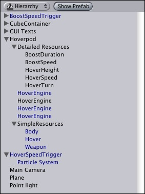

Previous
Previous
Game Objects are the most important concept in Unity. Every object in your game will be a Game Object. Game Objects can have different parts that make them up, called Components. Game Objects can also be attached to each other using the Parenting concept. By using Components, Parenting, and scripting, you will create structures of Game Objects that contain your game mechanics. They are the building blocks of your game.
Transform
The one Component that every Game Object will always contain is the Transform Component. Transforms give the Game Object a position, rotation, and scale within the scenes of your game. It is impossible to create a Game Object without a Transform, and impossible to remove the Transform from any Game Object. Whenever you move or rotate a Game Object in the Scene View, Inspector, or via scripting, you are altering its Transform Component, and not the Game Object itself. Transform values are relative to the World Coordinates by default. For more information about the Transform Component, please read the Transform Component page in the Component Reference.
Parenting
Unity makes use of a concept called Parenting. The basic idea is that you can make one Game Object "contain" another. You can create a Parent by dragging any Game Object in the Hierarchy View onto another. This will create a Parent-Child relationship between the two Game Objects. Think of the Game Object as a folder, and when you drop another onto it, the dropped Game Object becomes the Child that is contained within the Parent. When you do this, the Child's Transform values in the Inspector are displayed as relative to the Parent's Transform values, or Local Coordinates.
A Game Object can have any number of Children, but only one Parent. Children can also be Parents of other Game Objects. You can quickly tell if a Game Object is a Parent by looking at its name in the Inspector. If it has an arrow to the left of its name, it is a Parent.

A real-world example of a Parent-Child hierarchy
Components
Game Objects can be customized and made functional through the use of Components. Think of a Game Object as an empty cooking pot, and Components as different ingredients that make up your recipe of gameplay. Usually, multiple Components work together in a Game Object. For example, a Particle System uses a Particle Emitter, a Particle Animator, and a Particle Renderer. You can add Empty Game Objects to your scene, add Components one-by-one, then make your Game Object into a Prefab. You can then use the Prefabs to make multiple copies of your Game Object, and adjust individual Component properties in each copy. This gives you the most flexibility for creating Game Objects with a variety of attributes.
It would be a good idea to learn how to add, edit, and removed Components individually. The next page will discuss Components in-depth.
For a detailed list of all Components in Unity, please view the complete Component Reference.